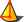

|
| Menüeintrag |
|---|
| Part Design → Erzeugen eines zusätzlichen geometrischen Körpers → Zu addierender Kegel |
| Arbeitsbereich |
| PartDesign |
| Standardtastenkürzel |
| None |
| Siehe auch |
| PartDesign CompPrimitiveAdditive/de |
Beschreibung
Fügt einen Kegel in den aktiven Körper (body) als Basisformelement ein oder vereinigt ihn mit den bereits bestehenden Formelementen.
{kind=link}
Anwendung
- Auf die Schaltfläche  Zu addierender Kegel klicken. Anmerkung: zu addierender Kegel ist Teil des benannten Symbols Erzeugen eines zusätzlichen geometrischen Körpers. Direkt nach dem Start von FreeCAD wird das Symbol von „zu addierender Quader“ in der Werkzeugleiste angezeigt. Wenn ein anderer Grundkörper zu sehen ist, kann durch Klicken auf den Pfeil neben dem Symbol der zu addierende Kegel in dem aufklappenden Menü ausgewählt werden.
- Die Parameter des Grundkörpers und über Attachment den räumlichen Bezug einstellen.
- Mit Klick auf OK bestätigen.
- Das Feature (Formelement) Kegel (Cone) erscheint unterhalb des aktiven Körpers (Body).
{kind=link}
Optionen
Der Kegel kann auf zwei verschiedene Wege bearbeitet werden:
- Durch Doppelklick in der Baumstruktur oder durch Rechtsklick und Auswahl von Grundkörper bearbeiten in dem Kontextmenü. Dies öffnet den Dialog „Parameter des Grundkörpers“ in dem Aufgabenpaneel.
- Mittels der Eigenschaften-Palette im Reiter Daten.
Eigenschaften
- Daten-EigenschaftAttachment: Bestimmt den Befestigungsmodus und den Befestigungsversatz. Siehe Befestigung.
- Daten-EigenschaftLabel: Die vom Benutzer vergebene Bezeichung für das Kegel-Objekt. Dies kann nach Bedarf geändert werden.
- Daten-EigenschaftRadius1: Der Wert des Radius an der Kegelbasis.
- Daten-EigenschaftRadius2: Der Wert des Radius an der Kegeloberspitze. Ein von Null verschiedener Wert erzeugt einen stumpfen Kegel.
- Daten-EigenschaftHeight: Die Höhe des Kegels entlang seiner Achse.
- Daten-EigenschaftAngle: Der Rotationswinkel des halben Querschnitts (360° ergeben einen vollen Kegel).